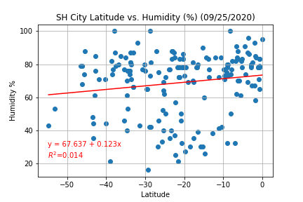
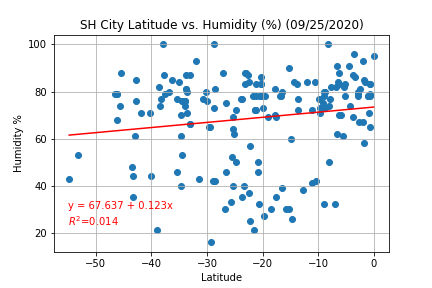

As we would expect, there is a strong correlation between latitude and temperature. The r squared value for this regression anaylis is quite high. This is easily seen on the plot displayed above. The further you get away from the equator (0), the lower the max temperature.

 
